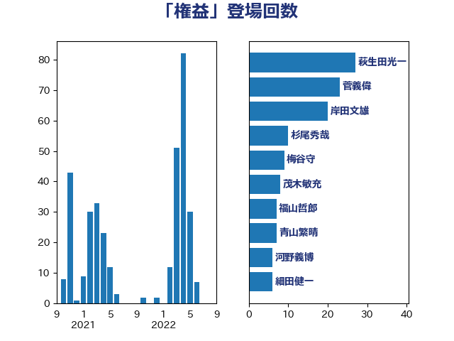

単語「権益」

| 萩生田光一 | 自由民主党 | 27 回 |
| 菅義偉 | 自由民主党 | 23 回 |
| 岸田文雄 | 自由民主党 | 20 回 |
| 杉尾秀哉 | 立憲民主党 | 10 回 |
| 梅谷守 | 立憲民主党 | 9 回 |
| 茂木敏充 | 自由民主党 | 8 回 |
| 福山哲郎 | 立憲民主党 | 7 回 |
| 青山繁晴 | 自由民主党 | 7 回 |
| 河野義博 | 公明党 | 6 回 |
| 細田健一 | 自由民主党 | 6 回 |
| 吉良州司 | 無所属 | 5 回 |
| 小池晃 | 日本共産党 | 5 回 |
| 岸信夫 | 自由民主党 | 5 回 |
| 井上信治 | 自由民主党 | 4 回 |
| 小野泰輔 | 日本維新の会 | 4 回 |
| 河野太郎 | 自由民主党 | 4 回 |
| 荒井優 | 立憲民主党 | 4 回 |
| 蓮舫 | 立憲民主党 | 4 回 |
| 井上哲士 | 日本共産党 | 3 回 |
| 加藤勝信 | 自由民主党 | 3 回 |
| 柳ヶ瀬裕文 | 日本維新の会 | 3 回 |
| 武田良太 | 自由民主党 | 3 回 |
| 沢田良 | 日本維新の会 | 3 回 |
| 菊田真紀子 | 立憲民主党 | 3 回 |
| 辻元清美 | 立憲民主党 | 3 回 |
| 音喜多駿 | 日本維新の会 | 3 回 |
| 三浦信祐 | 公明党 | 2 回 |
| 勝部賢志 | 立憲民主党 | 2 回 |
| 吉田統彦 | 立憲民主党 | 2 回 |
| 山添拓 | 日本共産党 | 2 回 |
| 志位和夫 | 日本共産党 | 2 回 |
| 杉田水脈 | 自由民主党 | 2 回 |
| 松沢成文 | 日本維新の会 | 2 回 |
| 林芳正 | 自由民主党 | 2 回 |
| 浦野靖人 | 日本維新の会 | 2 回 |
| 滝波宏文 | 自由民主党 | 2 回 |
| 片山大介 | 日本維新の会 | 2 回 |
| 田村貴昭 | 日本共産党 | 2 回 |
| 石井苗子 | 日本維新の会 | 2 回 |
| 赤嶺政賢 | 日本共産党 | 2 回 |
| 赤木正幸 | 日本維新の会 | 2 回 |
| 鈴木宗男 | 日本維新の会 | 2 回 |
| 鈴木敦 | 国民民主党 | 2 回 |
| 阿達雅志 | 自由民主党 | 2 回 |
| 中司宏 | 日本維新の会 | 1 回 |
| 中島克仁 | 立憲民主党 | 1 回 |
| 中曽根康隆 | 自由民主党 | 1 回 |
| 伊東良孝 | 自由民主党 | 1 回 |
| 伊藤岳 | 日本共産党 | 1 回 |
| 國場幸之助 | 自由民主党 | 1 回 |
| 塩田博昭 | 公明党 | 1 回 |
| 大塚耕平 | 国民民主党 | 1 回 |
| 安達澄 | 無所属 | 1 回 |
| 小林鷹之 | 自由民主党 | 1 回 |
| 山崎誠 | 立憲民主党 | 1 回 |
| 有村治子 | 自由民主党 | 1 回 |
| 朝日健太郎 | 自由民主党 | 1 回 |
| 杉久武 | 公明党 | 1 回 |
| 東徹 | 日本維新の会 | 1 回 |
| 松原仁 | 立憲民主党 | 1 回 |
| 柴田巧 | 日本維新の会 | 1 回 |
| 梶山弘志 | 自由民主党 | 1 回 |
| 森本真治 | 立憲民主党 | 1 回 |
| 横山信一 | 公明党 | 1 回 |
| 江島潔 | 自由民主党 | 1 回 |
| 熊谷裕人 | 立憲民主党 | 1 回 |
| 牧原秀樹 | 自由民主党 | 1 回 |
| 牧山ひろえ | 立憲民主党 | 1 回 |
| 玉木雄一郎 | 国民民主党 | 1 回 |
| 田村まみ | 国民民主党 | 1 回 |
| 石井章 | 日本維新の会 | 1 回 |
| 磯崎仁彦 | 自由民主党 | 1 回 |
| 稲津久 | 公明党 | 1 回 |
| 篠原豪 | 立憲民主党 | 1 回 |
| 緑川貴士 | 立憲民主党 | 1 回 |
| 藤巻健太 | 日本維新の会 | 1 回 |
| 藤田文武 | 日本維新の会 | 1 回 |
| 西岡秀子 | 国民民主党 | 1 回 |
| 赤澤亮正 | 自由民主党 | 1 回 |
| 足立康史 | 日本維新の会 | 1 回 |
| 長友慎治 | 国民民主党 | 1 回 |
| 馬場伸幸 | 日本維新の会 | 1 回 |
| 高木啓 | 自由民主党 | 1 回 |
| 高橋光男 | 公明党 | 1 回 |
| 高野光二郎 | 自由民主党 | 1 回 |
| 鬼木誠 | 立憲民主党 | 1 回 |